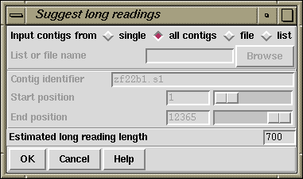

This routine (which is available from the gap4 Experiments menu) suggests which templates could be resequenced on a long gel machine to fill in single stranded regions or extend contigs. The "Estimated long reading length" tells the routine the expected length of reading that will be produced by the sequencing machine. The routine finds all single stranded regions, and where possible suggests solutions. Solutions will not be suggested using readings from templates that have inconsistent read-pair information.
The example output below shows a list of problem segments followed by suggested templates.
Prob 1..1: Extend contig start for joining.
Long c91d3.s1 367. T_pos=366, T_size=1000..1500 (1250), cov 189
Long c99e12.s1 340. T_pos=191, T_size=1000..1500 (1250), cov 216
Prob 1..456: No +ve strand data.
No solution.
Prob 1597..1736: No +ve strand data.
Long c53c6.s1 1074. T_pos=341, T_size=1000..1500 (1250), cov 32
Long e04c11.s1 1076. T_pos=376, T_size=1000..1500 (1250), cov 34
Long e05h9.s1 1081. T_pos=377, T_size=1000..1500 (1250), cov 39
Long e05a1.s1 1198. T_pos=329, T_size=1000..1500 (1250), cov 156*
Long c53b11.s1 1382. T_pos=216, T_size=1000..1500 (1250), cov 340*
Prob 2530..2532: No +ve strand data.
Long e03a8.s1 2283. T_pos=199, T_size=1000..1500 (1250), cov 308*
Long e05b10.s1 2331. T_pos=200, T_size=1000..1500 (1250), cov 356*
Prob 3974..4067: No -ve strand data.
No solution.
Prob 4067..4067: Extend contig end for joining.
D Long e06a3.s1 3588. T_pos=366, T_size=1000..1500 (1582), cov 76
Long c53b1.s1 3709. T_pos=360, T_size=1000..1500 (1250), cov 197
Some brief notes on the above output; looking at the suggested rerun of reading e05a1.s1.
Prob 1597..1736: No +ve strand data.
"?D Long"
"Long e05a1.s1 1198."
T_pos=329
T_size=1000..1500 (1250)
cov 156*
For the problem "3974..4067" there is "No solution" listed. This is due to the fact that there are no suitable readings within the estimated long gel reading length of this problem.
